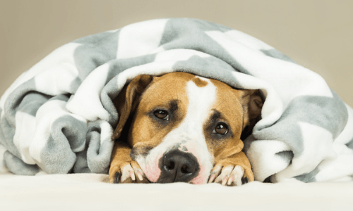

The ambulance parked up by a green in central Berlin is small, almost toy-like; a thick orange stripe across its sides, a tangle of wires looping from the ceiling.
It is one of three retrofitted and operated by Tomorrow.Bio, Europe's first cryonics lab, whose mission is to freeze patients after death, and one day bring them back to life, all for a cost of $200,000 (£165,000).
At the perfusion pump is Emil Kendziorra, Tomorrow.Bio's co-founder and a former cancer researcher who switched careers after finding progress in curing the disease "way too slow". While the world's first cryonics lab opened in Michigan almost half a century ago – triggering an enduring split between those who believe it is the future of humanity, and others who dismiss it as a non-starter – Kendziorra says that appetite is building.
So far they have frozen (or cryopreserved) "three or four" people and five pets, with almost 700 more signed up. During 2025 they will expand their operations to cover the whole of the US.
No one has ever been successfully revived following cryopreservation, and, even if they were, the potential result could be coming back to life severely brain damaged. That there is currently no proof that organisms with brain structures as complex as humans' can successfully be restored exposes the concept as "preposterous", says Clive Coen, professor of neuroscience at King's College London. He sees pronouncements that nanotechnology (carrying out elements of the process on a nano scale) or connectomics (mapping the brain's neurons) will bridge the current gap between theoretical biology and reality as overpromises, too.
Such criticisms have not blunted Tomorrow.Bio's ambitions. Once a patient has signed up with the firm and a doctor confirms they are within the final days of their life, the company dispatches an ambulance to their location. When legally pronounced dead, the patient is moved to Tomorrow.Bio's ambulance, where the cryonics procedure begins. The start-up has been motivated by patients whose hearts have stopped in freezing temperatures and then later been restarted again. One example was Anna Bagenholm, who in 1999 spent two hours clinically dead during a ski holiday in Norway, but was later revived.
During the procedure, the bodies are cooled down to sub-zero temperatures, and supplied with cryoprotective fluid.
"Once you go under zero degrees, you don't want to freeze the body, you want to cryopreserve it. Otherwise, you would have ice crystals everywhere, and the tissue would get destroyed," says Kendziorra, whose firm works both in practical and research areas of cryonics.
"To counteract that, you replace all the water, everything that could freeze in the body, with the cryoprotective agent." This is a solution whose primary components are made up of dimethyl sulfoxide (DMSO) and ethylene glycol (used in products like antifreeze). "Once you've done that, you cool down with a very specific cooling curve, very fast, to around -125C degrees (257F), and then very slowly, from -125C to -196C (384.8F)."
At the latter temperature, the patient is transferred to a storage unit in Switzerland where, Kendziorra says, you "wait it out".
"The plan," he says, "would be that at some point in the future, the medical technology would have advanced enough so that the cancer [or] whatever led to the patient's death in the first place is curable, and the cryopreservation procedure itself can be reversed."
Whether that happens in 50, 100 or 1,000 years is anyone's guess. "In the end, it doesn't really matter," he says. "As long as you keep the temperature, you can maintain that state for virtually indefinite timeframes."
"A lot of stuff that currently is not proven to work might work – just no one has tried it" – Emil Kendziorra
To those outside of cryonics, the notion might sound somewhere between delusional and dystopian. While Kendziorra is "not aware of any reason why it should not be possible in principle", the current tally of humans who have successfully been revived after cryopreservation is zero. Comparative animal studies showing its potential are also lacking. It is now possible to preserve a mouse brain by infusing it with embalming fluid, offering hope that humans' brains could one day too be kept intact for potential future revival – but this process occurs while the animal's heart is still beating, thereby killing it.
Kendziorra says that resistance is mostly down to how strange the notion of bringing someone back from the dead seems, but that most medical procedures are eyed with suspicion before they become mainstream. "Taking one heart and putting it into another human, at first sight sounds very weird," he says of organ transplantation, "but we do it every day." He believes cryonics could simply be another to add to that list.
He also thinks that research showing C.elegans, a roundworm, can be cryopreserved and returned to full function is encouraging proof that an entire organism can transcend death. There is some evidence too of organ revival among rodents: in 2023, researchers at the University of Minnesota Twin Cities cryogenically stored rat kidneys for up to 100 days before rewarming them and clearing them of cryoprotective fluids, and transplanting them back into five rats.
Full function was restored within 30 days. The diminutive size of the field (and, therefore, funding) means that to Kendizorra's mind, "a lot of stuff that currently is not proven to work might work – just no one has tried it". By the same token, once tried, they might not work at all, as is the case with vast swathes of medical research that applies to the likes of rodents or worms, but not humans.
Cryonics is one part of the booming life-extension arena, now mostly dominated by talk of longevity, which promises more years spent in good health. While endless tinctures and supplements, podcasts and books abound on the topic, practicable research – at least, beyond taking regular exercise and eating well – remains scant.
"While cryonics' proponents hope that a cure for the ailment that killed the patient would have been found by the time they returned to life, there is no guarantee"
Coen takes a dim view of cryonics, describing it as "a misplaced faith in antifreeze and a misunderstanding of the nature of biology, physics and death". Once the heart stops beating, our cells begin to decompose, causing enormous damage. When a body is then warmed back up from a cryopreserved state, "all the decomposition that was taking place during the early phase post-death will now start up all over again".
He suggests the better area of focus is cryogenics: long-term cryopreservation of material like tissues and organs at very low temperatures that can "be banked, and then used later". Others believe the key to life extension is reversing death itself. At the hospital of one "resurrectionist" doctor in New York in 2012, prioritising aftercare once a patient had flatlined led to a 33% resuscitation rate, compared to an average across the US and UK of half that figure.
Ethical concerns over ultra-cooling brains (a service Tomorrow.Bio also provides) and bodies shroud the field. The German company's clients' bodies are stored at a not-for-profit foundation in Switzerland, which Kendziorra says means will ensure their protection – but how this could really work in practice centuries after the fact, when a descendant suddenly finds themself in charge of their predecessor's long-frozen corpse, is tricky to imagine?
While cryonics' proponents hope that a cure for the ailment that killed the patient would have been found by the time they returned to life, there is no guarantee – nor that something else wouldn't immediately curtail their time on Earth a second time around. There is also the matter of the inordinate cost, with many families likely none too pleased about having their inheritance spent on the ultimate long shot.
"I would argue that the freedom to make the choice for yourself trumps all other potential ethical considerations," Kendziorra says. "There's a tremendous amount of people who buy their second super yacht, who are 85, who have, I don't know, three years left of life." On that basis, a $200,000 investment into potentially returning to the world looks, he says, like a fair deal.
He says that most of their clients are 60 and under, and funding the fees through life insurance (this can be arranged through the firm, or independently). For Louise Harrison, 51, signing up "was driven by curiosity".
"I was fascinated by the idea of possibly being restored to life in the future – it seemed like a form of time travel," she says. "Having a small chance of coming back versus no chance at all seemed to be a logical choice."
Harrison, who pays around $87 (£70) per month for membership and life insurance, says her decision has been met with raised eyebrows. "People often say to me, 'How horrible, everything and everyone you know will be gone.' But that doesn't put me off – we lose people all throughout life, but we usually find a reason to keep living."
Tomorrow.Bio are hoping that their US rollout will capture those with a similar intrigue about what our future world looks like. According to the Cryonics Institute, the inaugural US company that launched in 1976, 2,000 people have signed up with 263 people "in suspension… we have seen steady growth in recent years as the idea seems to be catching on", they say.
Reports suggest that the recent coronavirus pandemic made people more aware of death, and the push to preserve it. For that reason, perhaps, Tomorrow.Bio has set some ambitious goals: to be able to preserve the neural structure of memory, identity and personality within the year, and reversible preservation from sub-zero temperatures, or the "holy grail", by 2028.
"I can't say how high the probability is" that things will go to plan, says Kendziorra. "But I'm pretty confident in saying the probability is higher than cremation, if nothing else."
16.1.2025